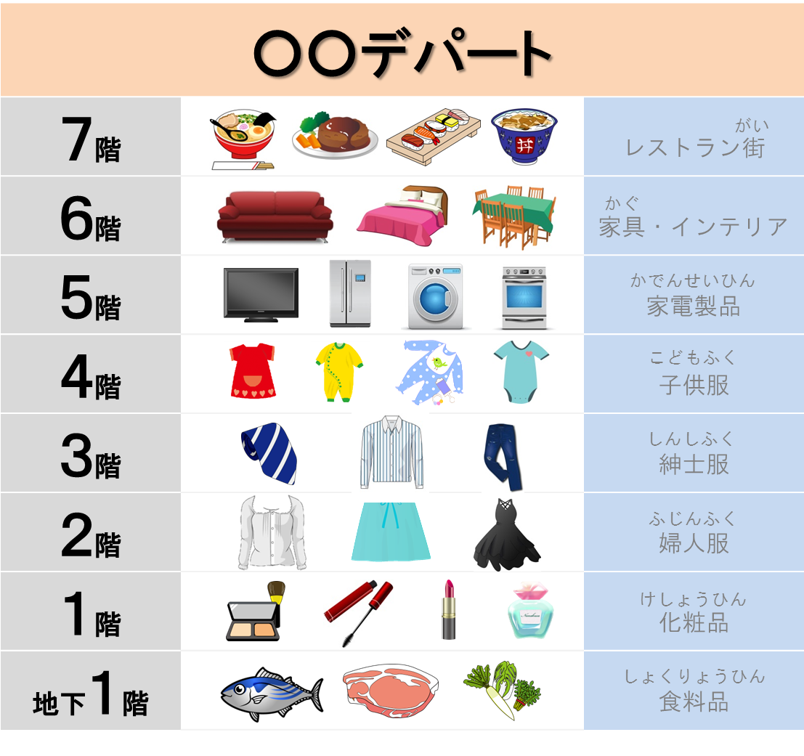
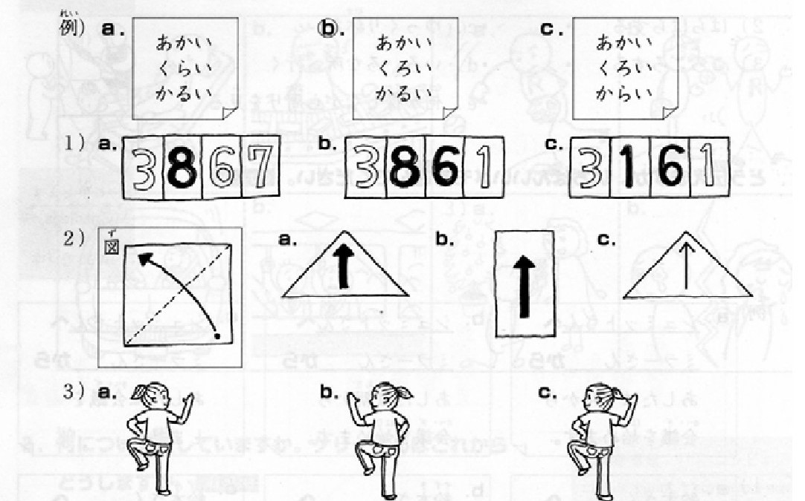
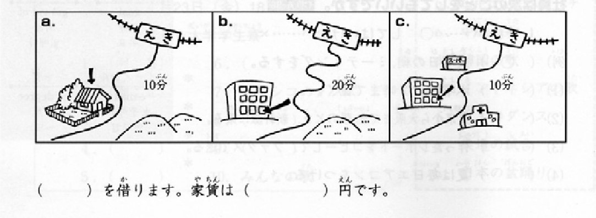
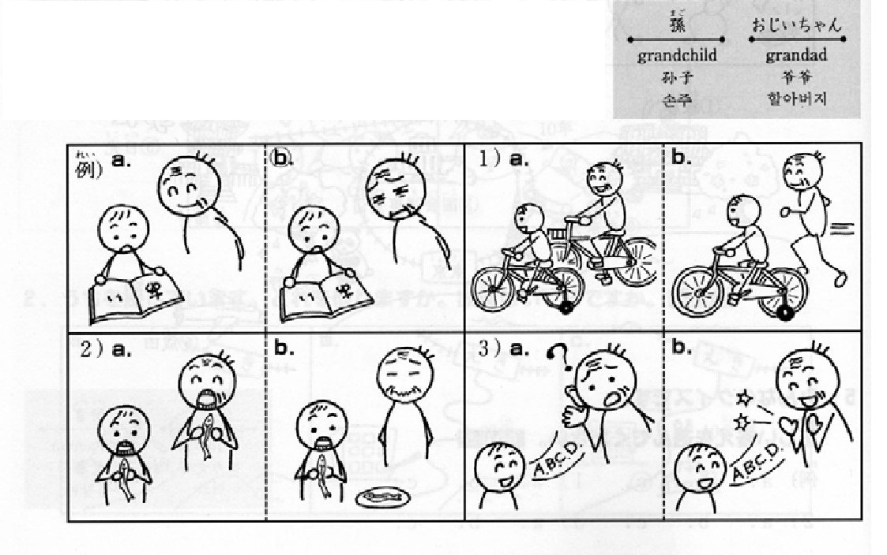
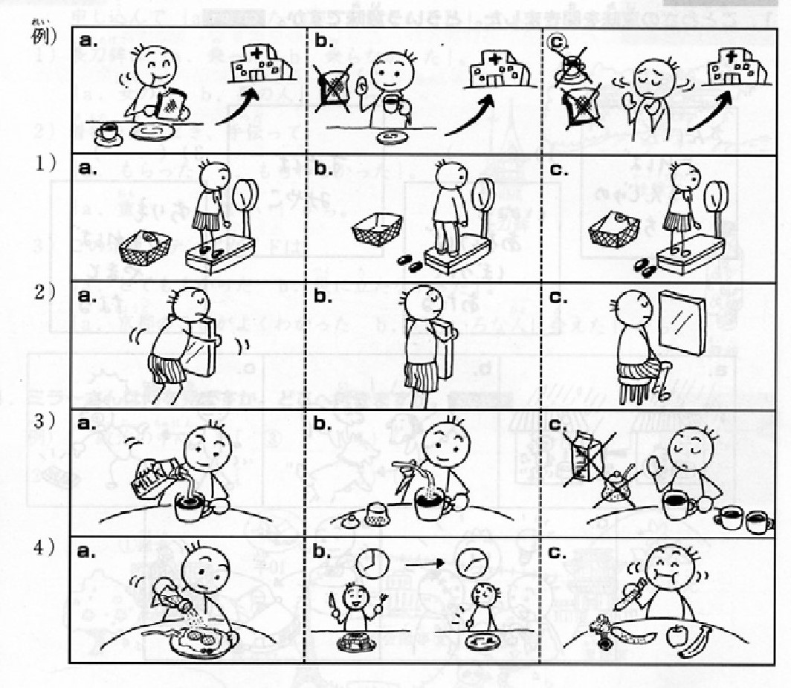

Bai kiem tra hang thang（Bai 34-40）
| 名前（カタカナ）Ho ten Katakana： | クラス Lop： |
| 名前（ローマ字）Ho ten Latinh： | 受験日 Ngay kiem tra： |
| 会社名 Ten cong ty： | |
例：どこで すれ（ ｂ ）、いいですか。
１） Ａ：写真を撮りたいんですが。
Ｂ：（）、（）がいいですよ。
２） 早く（）ように、速達で出しましょう。
３） 先生がする（）してください。
４） 食べた（）、薬を飲んでください。
５） 暗いですから、電気を（）（）ください。
６） 本は（）持っていますか。
７） 日本語が上手に（）、毎日練習しています。
８） 漢字を読む（）は難しいです。
９） 練習すれ（）するほど、上手になります。
１０） （）ですか。日本語が上手ですね。
１） 旅行は（ ）、（ ）いいです。
２） 練習して、漢字が（ ）ようになりました。
３） 1年前は日本語がわかりませんでしたが、今はかなり（ ）ようになりました。
４） 前は料理ができませんでしたが、今は（ ）ようになりました。
５） みなさん、海外へ行った時、鍵にパスポートを（ ）ようにしてください。
例） 話が長いです。 わかりません。
→ 話が長くて、 わかりません。
来週国へ帰ります。 5日に休んでもいいですか。
→来週国へ帰るので、 5日に休んでもいいですか。
１） 面白い先生に会いました。 嬉しいです。
２） テストが難しいです。 できなかったです。
３） 台風で電車が止まりました。 会議に遅刻してしまいました。
４） 今日はクリスマスパーティーです。 早く授業を終わりましょう。
５） ベトナム語がわかりません。 日本語で話していただけませんか。
１） 事故をしない（ ）、ヘルメットをかぶってください。
２） （ 2-1 ）、田中さん（ 2-2 ）呼ばれました。
３） 私は（ ）財布をされました。
４） 東京タワー（ ）１９５８年に建てられました。
５） 「ひまわり」はゴッホ（ ）に描かれました。
６） ソニーのテレビはいろいろな国で（ ）。
７） 漢字を読む（ ）は難しいです。
８） パンを作る（ ）ができますか。
９） 彼が結婚して（ ）の知っていますか。
１０） 私が生まれた（ ）は ホーチミンです。
１） Toi da bi ai do lay dien thoai.
２） Tam hinh nay da duoc chup o Malaisia cach day 200 nam.
３） Mon sushi duoc nhieu nguoi cua nhieu quoc gia an.

１） 「このスカートのサイズが合うかどうか、履いてみてください。」
２） 「ここはいつも混んでいるし、味もよくないので、上のレストランはどうですか。」
３） 「このコンピューターは字が小さくて、よくわかりませんね。」
４） 「明日は面接なので、スーツを買って帰ります。」
５） 「1人でこのオレンジの箱を運ぶのは無理です。」
１） やまとはヨーロッパの長い歴史が建てました。
２） 買い物が必要なのは食券です。
３） いつも薬を持つようにしてください。


（）を借ります。家賃は（）円です。
１）
２）
３）
４）
５）
１．ほんとう、なりましたね。
２．ええ、なりましたね。
３．ええ、なりました。
４．ええ、なりました。
５．ええ、なりました。
６．ええ、ずいぶんなりました。
７．ええ、きのうから、なりました。
８．ええ、なりましたよ。
９．あ、なるまで煮るんですね。（煮ます：nau）
10．うん、よくなったよ。

例）田中さんは（a. 遅刻 b. 欠席）しました。それで、部長は高橋さんを
（a. しかりました b. しかられました。）
１）（）田中さんは映画のチケットをもらいました。
それで、（）田中さんを映画に誘いました。
２）犬が田中さんを（）しました。
それで、田中さんは山田さんのうちへ（）
３）部長は田中さんにアメリカで新しい仕事を始めろと
（）。
それで、田中さんは（）します。
４）田中さんは奥さんに旅行を（）が
いっしょにアメリカへ行きたくないと（）。
例）・・・（a. 海に行く b. 海に行かない）
（ずっと同じで退屈）のは（おもしろくない）から。
１）・・・（）
（）のは（）から。
２）・・・（）
（）のは（）から。
３）こども・・・（）
（）のは（）から。

Hay nhan nut ben duoi de gui ket qua cho giao vien.
採点が終わったら、結果を先生に送信してください。